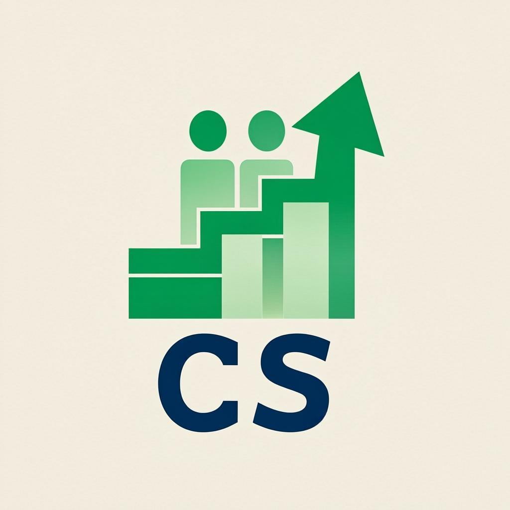

Costos · Guía interactiva
Cómo armar tu primera ficha de costeo sin ser contador
Aprende a preparar una ficha de costeo y a incorporar la merma al costo de cada porción.
Leer la guía
CS ConsultoríaGestión gastronómica ContactoGuía interactiva · 5 pasos
Parte con una receta de tu menú. Aprende a registrar lo que gastas, incluir la merma y calcular cuánto cuesta cada porción antes de fijar el precio.
Ingresa el costo por porción de tu ficha y el margen que quieres obtener sobre el precio de venta.
Precio = costo por porción ÷ (1 − margen). Para un margen de 35 %, usa 0,35 en la fórmula. El resultado se redondea hacia arriba al peso entero.
Blog
Costos · Guía interactiva
Aprende a preparar una ficha de costeo y a incorporar la merma al costo de cada porción.
Leer la guíaConsultoría
Calcula el costo real de tus recetas, incorpora mermas y revisa el margen antes de fijar un precio.
Define qué incluye cada propuesta y organiza la información que necesitas para cotizar y preparar un evento.
Identifica qué insumos debes controlar y qué tareas repetitivas puedes simplificar con herramientas digitales.
Aplicaciones
Una aplicación para centros de eventos que reúne fichas de costeo, un cotizador y un calendario de eventos.
Probar demo de SOLVI FlowContacto
Hablemos de tus costos, tus cotizaciones o cómo digitalizar parte de tu operación.